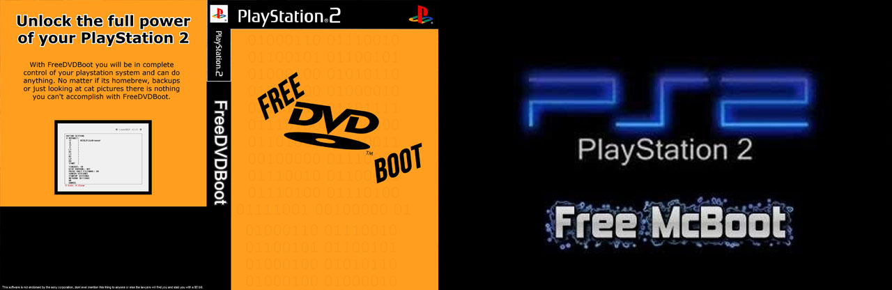

PS2 FreeDVDBoot
Explotación del reproductor de DVD de PlayStation 2. Esto le permite grabar sus propios discos caseros de PlayStation 2 y reproducirlos en una consola sin modificar. Con uLaunchELF como programa inicial, los usuarios pueden incluir varios programas homebrew en el mismo disco.
Para esta Guia
Requisitos para este tutorial
- DVD para grabar
- Una memory card de PS2 desocupada
- Una memoria USB que tiene que tener formato FAT32
- Nuestra consola compatible con este método
Nuestros primeros pasos serian
- Verificar nuestra consola si es compatible con este método, con nuestra consola encendida le damos al
 (Versión) nos fijamos en nuestra versión de consola y reproductor de DVD. Y la revisamos en esta página WEB playstationdev.wiki sabiendo esto escogeremos nuestra ISO a referencia de la compatibilidad de nuestra consola.
(Versión) nos fijamos en nuestra versión de consola y reproductor de DVD. Y la revisamos en esta página WEB playstationdev.wiki sabiendo esto escogeremos nuestra ISO a referencia de la compatibilidad de nuestra consola. - Abriremos UltraISO u otro programa que nos permita quemar nuestra imagen FreeDVDBoot a un DVD (Grabar a la más baja velocidad permitida para logras un disco de calidad para nuestra consola).
- Una vez listo lo colocamos en nuestra consola desbloqueada pero no cerramos la tapa.
- Colocamos nuestro USB a nuestra PC y verificamos que tenga el formato FAT32 si no lo tiene con el programa GUIFORMAT le podremos dar el formato deseado si nuestra PC no nos permite hacerlo.
- De nuestra carpeta FMCB descargamos el archivo .rar lo descomprimimos y la carpeta que nos aparezca la copiamos a nuestra unidad USB.
- Sacamos el USB y lo pinchamos a nuestra consola.
- Encendemos nuestra consola y nos vamos a configuración – idioma y lo demos en ingles y reiniciamos nuestra consola (Esto es solo para arrancar el DVD después de terminar la instalación lo puedes dejar en el idioma de preferencia).
- Y conectamos nuestra memory card ps2 y en la primera ranura y verificamos que esté completamente desocupada.
- Cerramos la tapa con nuestro DVD recién grabado y si no inicia el disco lo hacemos desde el navegador para iniciar ulaunchelf
- Una vez iniciado nuestro ulaunchelf
- Le damos al
 a FileBrowser
a FileBrowser - Después vamos a MASS:/ con
- Nos abrirá nuestra unidad USB con nuestra carpeta y entramos dentro con
- Y buscamos FMCBInstaller.elf y le damos
- Y se nos iniciara nuestra aplicación
- Una vez iniciada nuestra aplicación de FMCBInstaller.elf
- Nos aparecerá un menú y le damos a
- Install: instala FMCB (Free MCBoot) en nuestra memoria
- Multi-Install: instala FMCB (Free MCBoot) para todas las consolas
- Uninstall FMCB (Free MCBoot): eliminamos todos los archivos de FMCB
- Uninstall MI: (En espera de información concreta)
- Exit: Salimos del instalador
- Le damos a la primera opción Install
- Con muestra memory card en la ranura 1 de nuestra consola de damos YES
- En tipo de instalación de damos a Normal
- Y se estarían instalando y al terminar le damos en OK
- Y salimos de la aplicación
- Al haber terminad de instalar verificaremos en nuestra memory card algunos archivos estos archivos jamás eliminar de nuestra memory
- Sacamos nuestro disco y lo guardamos no se va utilizar mas y reiniciamos nuestra consola.
- Y estaría instalado todo


×